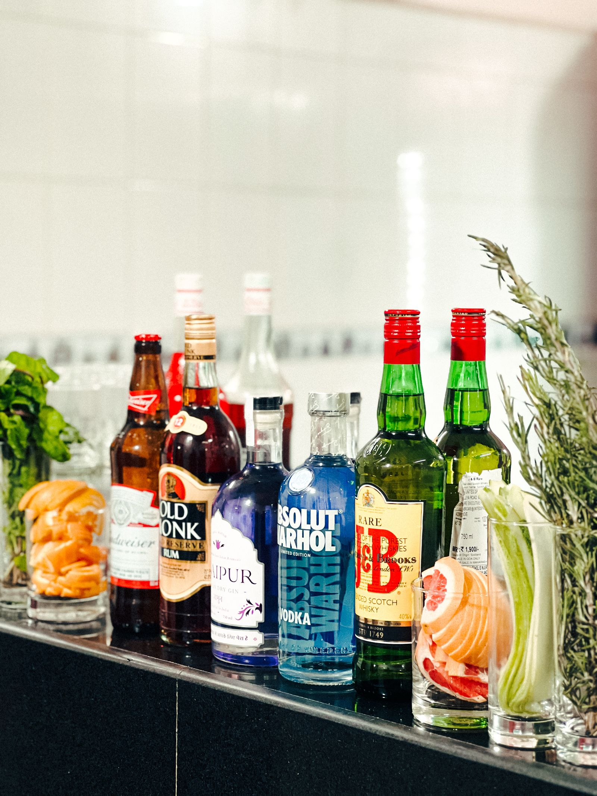
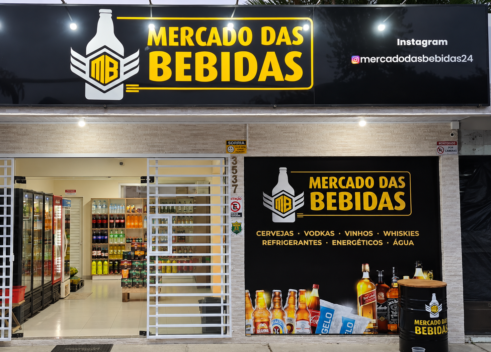

Cervejas
Diferentes marcas. Muitas formas de brindar.
NACIONAIS & IMPORTADAS
Uma variedade de bebidas nacionais e importadas para diferentes gostos e ocasiões.
DO SEU DIA A DIA AO PRÓXIMO BRINDE.

EXPLORE A VARIEDADE
Dos clássicos às novas descobertas.
Encontre inspiração para a sua próxima escolha e consulte as opções com a nossa equipe.
Diferentes marcas. Muitas formas de brindar.
Personalidade em cada escolha.
Uma seleção para apreciar sem pressa.
O lado mais refrescante do seu dia.
Refrigerantes, águas, sucos e energéticos: consulte as opções.

PRAZER, SEU MERCADO DE BEBIDAS
Uma boa escolha começa com possibilidades. No Mercado das Bebidas, você encontra bebidas para diferentes gostos, do encontro casual às ocasiões especiais.
Converse com a nossa equipe para conhecer as marcas e encontrar as opções que combinam com o seu momento.
VENHA CONHECER
Visite o mercado ou fale com a nossa equipe.
A gente ajuda você a escolher.